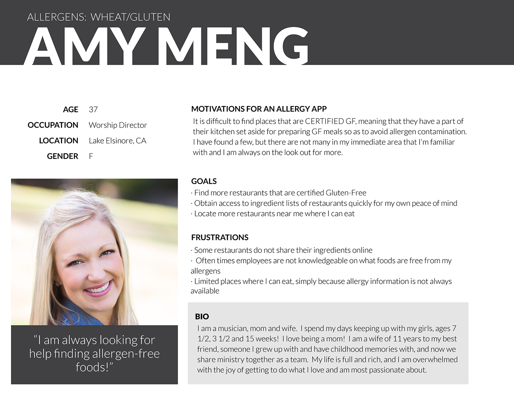

CLEAR PLATE
Why Clear Plate?
Clear Plate was my final project with BLOC, and was an opportunity for me to create something of my own from the ground up. I knew this project was coming at the end of the program, and for a while I had no idea what I would choose. As the time drew nearer, and my thoughts became more focused, the idea just came to me.
Recently I became gluten-intolerant, and it has made eating out much more difficult. I've found myself searching for restaurants' ingredient information, and sometimes to no avail. My options for eating out have become pretty limited, and often times I will avoid a restaurant simply because I don't know if they have any options for me.
Knowing that there are a lot more people out there like me, and many with other allergies, I thought there would probably be a demand for an app that helps a user quickly find restaurants where they can eat, based on their specific allergens. The questions I had at this point were:
1. Does an app like this already exist?
2. Is there really a demand out there for it?
Competitive Analysis
I'm an Apple guy, so I had already had in my mind that this would be an iOS app, at least that's how it would start. So I did a search on the App Store to see what apps existed in this space.
These 3 apps above were the only competitors that were really trying to help people with any allergy, find places to eat. Rather than breaking these all down one by one, I'll summarize my findings for you. None of these apps are resources that I would personally utilize, primarily because they are all very limited in the information they provide, largely because they are either relying on people to submit information, or they are only focused on large chain restaurants.
User Research
I had some real questions that I needed answered to determine what it would take to create an app that would really help people with allergies. I started the survey asking the most important question:
Do you have food allergies, or have a family member with food allergies?
If the person taking the survey answered "no" to this question, the survey ended. A few other things I sought to find included:
1. What food allergies people suffered from.
2. Did they find it difficult to eat out because of their restrictions?
3. Would they be interested in an app that could help them find places where they could eat out?
4. How many times a week do they eat out?
5. How do they currently find restaurants that are safe for them to eat at?
6. What features would they want to see in an app like this?
For this project I sought to reach a larger audience, so I spent a day finding forums, and support sites for allergy sufferers and I started emailing my survey to these groups. Within a couple days I had 220 responses and the results showed that there definitely is a demand out there for an app that works.

Once I had my survey results in I could see that my average respondent was overwhelmingly female (97%) and caucasian (87%) with an average age of 40 years. My friend Amy met the profile pretty well, I should note that she is not yet 40 though!
Branding
The research was done, and it was time to think of a name and develop an identity for this app. The app's primary function would be finding food that was free of certain allergens for the user. From that statement, there were two things that I thought needed to be incorporated into the name:
1. Allergen-Free
2. Food
Apparently the competitor Allergy Eats, was on the same wavelength as me. As I thought more about the purpose of the app, I thought of the word "inspect", which led me to the image of a magnifying glass, and a plate of food. Thinking about that process, someone who was inspecting a plate for a certain allergen might say, "This plate is clear!" And there I had it, Clear Plate would be the name, and the logo would be a plate, and a magnifying glass.
I created a style guide landing on greens for the app colors since green is commonly associated with health and wellness, and helping people avoid allergic reactions is helping people stay healthy.
Wireframing
Creating my wireframes for Clear Plate was relatively easy after getting the results from my survey, because I knew what needed to be included. Here are some statistics and some comments from the persons surveyed that directly impacted my designs:
1. 93.9% want to utilize Location Services to find restaurants.
2. 92.9% want to see specific menu items that exclude their allergens.
3. 92.3% want to see a list of ingredients for the menu items at restaurants.
4. 86.2% want to be able to comment on a restaurant's assistance with allergy needs.
5. 69.4% want an option to favorite restaurants and access their list of favorites.
6. Some of the respondents noted that they will not go to a restaurant until they can talk to a manager, so a telephone icon was included on the restaurant detail page.
7. Some of the respondents wanted to be connected to other users, so they could see when restaurants failed to provide allergy friendly food.
Hi-Fi Wireframes and Prototype
I'm really proud of how my designs for Clear Plate turned out, and the user tests that I did generated a positive response. Below are a few of the hi-fi wireframes created, and I've included a couple of links to access the User Test and Prototype so you can get a sense for how Clear Plate would function. Click here to access the User Test. Click here to access the prototype.